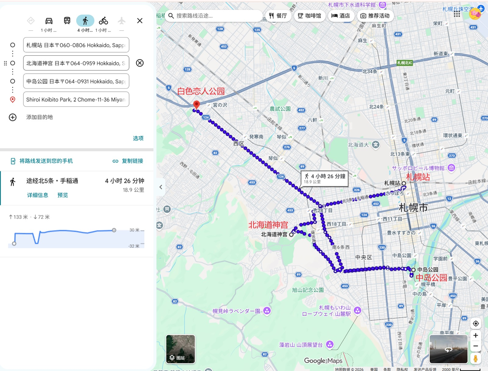
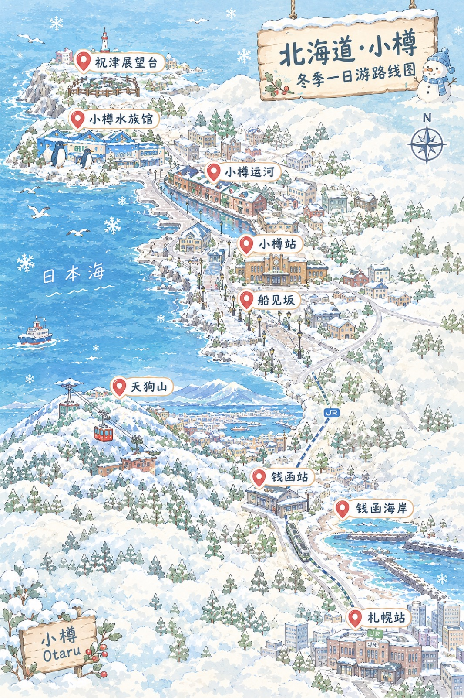
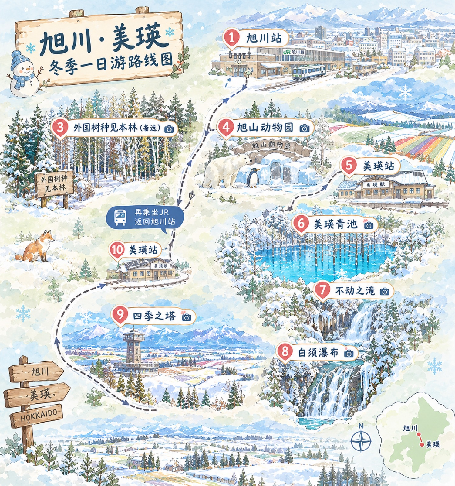
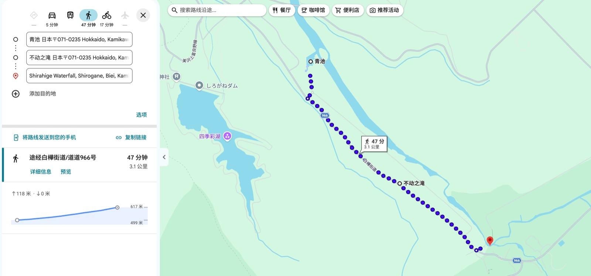
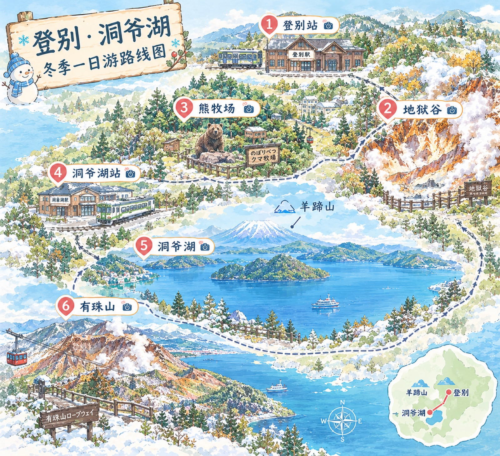
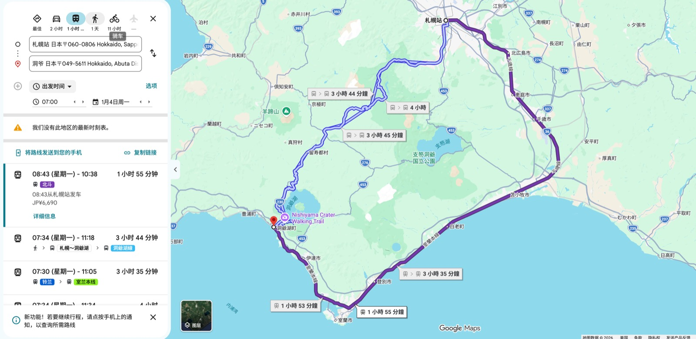
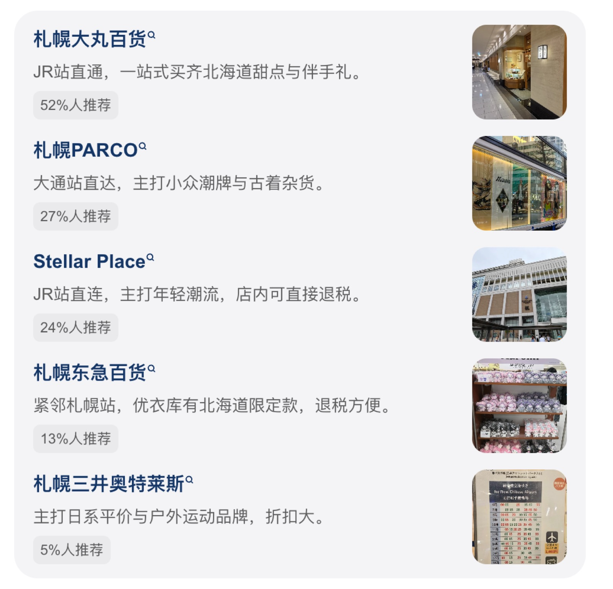

公园
札幌站33min北海道神宫34min中岛公园40min白色恋人公园（10:00 - 17:00） 

北海道大学

藻岩山

交通指南
从札幌市区出发前往藻岩山山麓站，最推荐乘坐有轨电车搭配免费接驳车。
- 乘坐市电：在市中心（如薄野站）搭乘札幌市电（环状线），在“缆车入口站”（ロープウェイ入口）下车。
- 免费接驳车：下车后过马路，在斜对面街道乘坐白绿配色的免费接驳巴士（無料シャトルバス），约 2-3 分钟即可直达山麓缆车站。每 15 分钟一班（周末及节假日 10:00 开始运营，平日 17:15 开始运营）。
- 步行备选：如果不赶时间，从电车站在平路走一段再上坡，步行约 10 分钟也能到达山麓站。
- 公交备选：从札幌站或圆山公园站可搭乘 JR 北海道巴士（如环 11 路），在“藻岩山缆车站”下车。
缆车与票价
上山需要乘坐两段缆车，全程约 20 分钟。
- 两段缆车：第一段是山麓站到中腹站的大缆车（Ropeway），约 5 分钟；第二段是中腹站到山顶站的迷你登山缆车（もーりすカー / Morris Car），约 2-3 分钟。
- 往返套票：成人 2100 日元，儿童（小学生）1050 日元。强烈建议直接购买包含两段缆车的往返套票，最省心且划算。
- 运营时间：夏季（4-11 月）10:30-22:00；冬季（12-3 月）11:00-22:00。上行末班车通常在 21:30 左右，具体请以官网当日公示为准。
- 注意：缆车大约 15 分钟一班，遇到恶劣天气（大风、大雾、暴风雪）可能会临时停运，出发前务必查看官网实时状态。
札幌站钱函站钱函海岸小樽站小樽水族馆祝津展望台天狗山船见坂小樽运河小樽站札幌站


- 07:30 – 08:15
札幌站乘坐JR函馆本线（各站停车普通电车）前往钱函站（约45分钟，单程约470日元）。注意：快速列车不停靠钱函，必须坐普通电车。 - 08:15 – 09:00
钱函海岸打卡。出站右转，跟着路标往海边走（约3-5分钟），在防波堤和沙滩拍雪海大片。风极大，拍完速撤。 - 09:00 – 09:40
返回钱函站，继续乘坐JR前往小樽站（约30分钟）。 - 09:40 – 10:00
小樽站出站，在右侧巴士总站（3号站台）乘坐11路巴士前往小樽水族馆（约25分钟）。 - 10:00 – 11:30
小樽水族馆游玩。重点看企鹅散步（需提前查好当天表演时间，通常有10:40或12:40场次），馆内不大，快速逛完。 - 11:30 – 12:10
从水族馆出来，沿坡道步行约15-20分钟前往祝津展望台（也可付费坐接驳车）。在山顶俯瞰水族馆、日本海和日和山灯塔，风很大，拍完即走。 - 12:10 – 12:30
步行回水族馆公交站，坐巴士返回小樽站。 - 12:30 – 13:10
小樽站前乘坐9路巴士前往天狗山缆车站（约20分钟）。 - 13:10 – 14:30
乘坐缆车上天狗山，俯瞰小樽全景和港口。山顶有商店和神社，记得穿够衣服，非常冷。 - 14:30 – 15:00
坐缆车下山，乘巴士返回小樽站。 - 15:00 – 15:40
从JR小樽站步行前往船见坂（《情书》取景地），在陡坡上拍同款日剧氛围感照片，坡顶可眺望小樽港。 - 15:40 – 16:30
沿路逛到小樽运河，拍石造仓库和水面倒影，感受电影感。 - 16:30 – 17:00
步行回小樽站，乘坐JR快速列车返回札幌站（约35分钟）。
交通与票务指南
- JR段：札幌⇋钱函⇋小樽，可直接刷 西瓜卡（Suica）或 ICOCA 等交通卡。如果买了 北海道JR Pass 则直接刷卡进站。注意钱函站必须坐“各站停车”，不要坐“快速”。
- 小樽巴士段：小樽市内巴士（去水族馆、天狗山）大多是一口价（约240日元），上车拿整理券或直接刷卡，下车前门投币。驾驶位旁有换零机。
- 天狗山套票：建议在小樽站前的巴士站或缆车站购买“巴士+缆车”往返套票，比单独买划算，也能省点排队时间。
札幌站旭川站外国树种见本林(备选)旭山动物园美瑛站美瑛青池不动之滝白须瀑布四季之塔美瑛站旭川站札幌站



行程概览与交通建议
- 路线顺序：札幌 → 旭山动物园 → 美瑛青池 → 白须瀑布 → 不动之滝（徒步） → 四季之塔（日落） → 札幌。
- 交通方案：
- 包车/拼车（首选）：景点之间距离远，包车可以省去等巴士和换乘的折腾，行李也能放在车上，随时在车里取暖，最适合一天跑多个点。
- 公共交通（自由行）：需乘坐 JR 特急到旭川，再转巴士去动物园；之后从旭川坐 JR 到美瑛站，再转 39路/42路 巴士去青池和白须瀑布。务必提前在 Google Maps 或官网查好时刻表，错过一班可能需等 1 小时。
详细时间轴安排
-
08:00 – 09:30
札幌前往旭川- 乘坐 JR 特急「ライラック号」或「スーパーカムイ号」，约 1 小时 25 分钟抵达 旭川站。建议买指定席，确保有座。
-
09:30 – 11:40
旭山动物园- 从旭川站乘坐 42路 巴士约 40 分钟到达动物园。
-
游玩重点：直奔企鹅区，11:00 通常有「企鹅散步」（冬季限定，需看当天官网公告）。还可以看北极熊、小熊猫和海豹圆形通道。
-
注意：动物园面积不小，建议穿防滑鞋，雪地很滑。
-
11:40 – 13:00
返回旭川站并前往美瑛- 乘坐巴士返回旭川站，换乘 JR 富良野线前往 美瑛站（约 40 分钟）。
- 午餐建议：可以在旭川站或美瑛站附近简单吃个咖喱或拉面，或者提前在便利店买好便当在车上吃，节省时间。
美瑛青池不动之滝白须瀑布徒步


-
13:00 – 13:40
前往美瑛青池- 在美瑛站前巴士站乘坐 39路 巴士前往「白金青池」站（约 40-50 分钟）。
-
游玩重点：冬天的青池是梦幻的冰蓝色，白雪覆盖的树林搭配蓝色池水，非常出片。入口木桥右侧光线穿过树林的角度最美。
-
13:40 – 14:30
白须瀑布- 从青池可以步行约 15-20 分钟前往白须瀑布（下坡路，沿途风景好），或者坐巴士直达。
-
游玩重点：瀑布从冰雪中倾泻而下，河水泛着湛蓝色。在桥上远观非常壮观，注意脚下防滑，不要靠栏杆太近。
-
14:30 – 15:30
徒步至 白金不动之滝- 从白须瀑布沿着森林小路徒步下行至不动之滝（约 30-40 分钟）。
-
游玩重点：相比白须瀑布的人多，这里更安静秘境，是一道隐于雪中的小瀑布，拍照非常出片。注意：全程下坡不累，但千万不要反向上爬，且一定要靠路边走，注意安全和防熊。
-
15:30 – 16:30
返回美瑛站并前往四季之塔- 在不动之滝附近公交站坐巴士返回美瑛站（约 20 分钟）。
- 从美瑛站步行约 10 分钟到达 四季之塔。
-
16:30 – 17:30
四季之塔看日落- 登上塔顶，俯瞰整个美瑛小镇的全景。在晴朗的傍晚，可以看到夕阳洒在雪原和小镇上的绝美景色，非常适合拍氛围感照片。
-
17:30 – 19:30
返回札幌- 从美瑛站乘坐 JR 回到旭川站，再换乘 JR 特急返回札幌站。
备选方案：外国树种见本林
- 位置：从JR旭川站乘坐公交到“神楽农协前”下车，步行约5分钟。
- 特色：免费入内，有高大的外来针叶树组成的林道，阳光斑驳，非常适合拍静谧文艺风格的雪景照。冬天积雪下的针叶林很有北国氛围，人少清静。
- 注意：建议上午去，光线比较好，下午会背光。公园内没有卫生间，需提前在车站解决。
实用避坑与保暖提醒
- 时刻表是命脉：美瑛到白金温泉/青池的巴士（39路/42路）通常 1 小时才有一班，且经常没有座位。如果坐公共交通，一定要在 Google Maps 上确认好实时到达时间，错过一班整个行程就会崩盘。
- 保暖装备拉满：北海道户外风大且冷，一定要穿防滑防水的雪地靴（最好备冰爪）、厚手套、帽子和围巾。多贴暖宝宝，手机在低温下容易掉电关机，记得贴暖宝宝或放在怀里保暖。
- 现金与支付：部分巴士和便利店可能不支持所有信用卡，建议准备一些日元现金。部分巴士支持 Visa/Mastercard 信用卡或支付宝，上车下车都要刷卡。
- 关于企鹅散步：企鹅散步不是每天都有，通常需要天气足够冷（积雪较厚）才会进行，出发前务必查看旭山动物园官网的最新公告。
札幌登别站地狱谷熊牧场洞爷湖站洞爷湖有珠山札幌


JR路线：北斗线 

核心路线规划
- 路线顺序：札幌 → 登别地狱谷 → 登别熊牧场 → 洞爷湖湖畔 Walk → 有珠山缆车看日落 → 返回札幌。
- 时间分配：建议早上 7:00 从札幌出发，晚上 19:00 左右回到札幌，全程约 12 小时。
详细行程安排
-
07:00 – 08:45
札幌出发前往登别从札幌站乘坐 JR 特急北斗号 前往 JR 登别站（约 1 小时 15 分钟）。建议购买靠窗的指定席，沿途可以欣赏海景。到达后在站内寄存行李，然后乘坐道南巴士前往登别温泉街（约 15 分钟）。 -
09:00 – 11:00
登别地狱谷探秘从温泉街步行约 10 分钟即可到达地狱谷入口。这里是火山喷发遗址，硫磺味浓郁，白烟缭绕。沿着栈道走一圈约 20 分钟，可以打卡展望台和铁泉池；如果体力充沛，可以延伸走到 大汤沼 和天然足汤（约 1 小时）。 -
11:00 – 12:30
登别熊牧场喂熊从地狱谷返回温泉街，步行或坐巴士前往熊牧场。乘坐缆车上山，可以买饼干投喂北海道棕熊，看它们作揖要吃的，非常有趣。山顶观景台还能远眺太平洋。 -
12:30 – 13:30
登别前往洞爷湖在登别温泉街简单吃个午餐（推荐地狱拉面或温泉馒头），然后乘坐巴士返回 JR 登别站，换乘 JR 特急前往 JR 洞爷站（约 40 分钟）。 -
13:30 – 15:30
洞爷湖湖畔 Walk从 JR 洞爷站乘坐巴士前往洞爷湖温泉街（约 20 分钟）。在湖边漫步，欣赏不冻湖的景色，天气好时能清晰看到对面的 羊蹄山。湖边有 28 处雕刻公园，非常适合拍照打卡。 -
15:30 – 17:30
有珠山缆车看日落乘坐巴士前往昭和新山站，步行至有珠山缆车站。乘坐缆车上山（往返约 2000 日元），在山顶展望台俯瞰洞爷湖全景和昭和新山。傍晚时分，斜阳照在火山口上，日落景色非常震撼。 -
17:30 – 19:00
返程札幌从有珠山乘坐巴士返回 JR 洞爷站，再乘坐 JR 特急返回札幌站。
交通方式对比
- 公共交通（JR+ 巴士）：性价比最高，适合预算有限且时间观念强的人。但洞爷湖和有珠山之间的巴士班次较少，必须提前查好时刻表，错过一班可能会耽误很久。
- 包车/拼车：最省心省力，行李直接放在车上，不用拖着箱子赶巴士和换乘。适合 2-4 人结伴出行，人均费用大概在 7000-10000 日元左右，中途还可以随时在绝美路边停车拍照。
- 一日游跟团：适合不想做攻略的人，行程固定，包含核心景点，但自由度较低，时间比较赶。
避坑与实用 Tips
- 硫磺味预警：登别地狱谷的硫磺味非常浓烈（像臭鸡蛋味），如果不喜欢这个味道，强烈建议戴口罩。
- 巴士时刻表：洞爷湖和有珠山之间的道南巴士班次很少（一天可能只有 3-4 班），一定要提前在 Google Map 或巴士官网查好时间，预留等车时间。
- 熊牧场二选一：登别熊牧场和 昭和新山熊牧场 功能类似，一日游时间紧，选一个去就行，不用两个都跑。
- 有珠山天气：有珠山缆车受天气影响较大，如果遇到大雾或强风可能会停运，出发前一定要看好天气预报和缆车运营状态。
- 行李寄存：如果从札幌带行李出发，可以寄存在 JR 登别站或 JR 洞爷站的储物柜，玩完再取，不要拖着行李去坐巴士。
札幌商场分布： 
16:00前到达新千岁机场乘机回香港 🛫